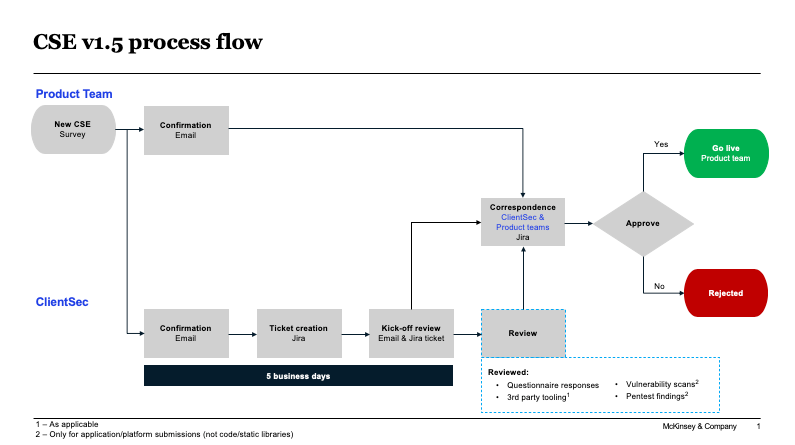

How to prepare for the Pen Test
Important contacts:
ClienTech Security team: Sebastian Cubillo, Edgar Juniga
ClienTech SRE team: Michal Gacek (responsible), Ricardo Almeida, Jeremy Kulbarsh (for escalation and PS)
Synack: Del Wright
CSE and Pen-test Process
Deploy the final version of Product solution to a staging environment
Review the CSE process at https://mckinsey.ent.box.com/notes/644453923862?v=ClienTechSecurityEvaluation
{kind=link}
Figure 1 CSE Process flow, source: https://mckinsey.ent.box.com/notes/644453923862?v=ClienTechSecurityEvaluation
Fill out the CSE questionnaire at https://www.surveys.online/jfe/form/SV_5b6YO6irUf2Y5gh
The questionnaire covers all the technical aspects of the Application including a architecture diagram of the application landscape. Once the CSE has been submitted, a Jira ticket will be created and you’ll be notified of the progress/activity on the ticket
Review the pen test process at https://mckinsey.ent.box.com/notes/649963727018?v=Penetration-Testing
Get the users created for the pen testers to access the. A JIRA ticket needs to be created, labelled as ‘CellSRE’ and assigned to the SRE team Link to JIRA Board
Ensure that the IP ranges specified in the document above are whitelisted. This is usually not required as the ClienTech solutions already have the required IP addresses whitelisted.
Fill out the pen test request form to initiate the test https://www.surveys.online/jfe/form/SV_0D1yTdLoMFBCliR
Once the Pen Test request is received ClientTech cecurity team will reach out for further details and the expected timelines for the Pen test completion
Synack team will grant you and the other primary contacts (as listed in the pen test request) access to their portal: https://login.synack.com/?n=12216674&return_to=%2Fvulnerabilities%2Fchuckhoneyant-5
Keep logging into the Synack portal to learn the pen test start date, end date, and any progress on the pen-test as well as any reported vulnerabilities
Publish the plan to fix vulnerabilities, fix them and communicate to the ClienTech Security team about the need for retest.
Deploy the fixed version and book a retest if required.
Best practices/Important points to keep in mind:
Do not deploy any code changes to the staging environment (pen-test environment) after the pen-test has begun until the pen-test has been completed.
In order to publish the go-live plan, factor the time required for pen-test and a tentative time for fixing any potential vulnerabilities into the overall plan
Consider retaining the relevant dev team members to carry out the fixes if required
Be timely in responding to any questions/need for clarification on the Jira tickets for the pen-test as well as CSE.